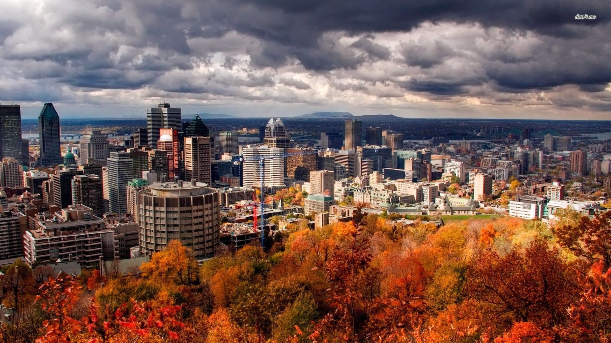

The history of Montreal, located in Quebec, Canada, spans about 8,000 years. At the time of European contact, the area was inhabited by the St. Lawrence Iroquoians, a discrete and distinct group of Iroquoian-speaking indigenous people. they spoke Laurentian. Jacques Cartier became the first European to reach the area now known as Montreal in 1535 when he entered the village of Hochelaga on the Island of Montreal while in search of a passage to Asia during the Age of Exploration. Seventy years later, Samuel de Champlain unsuccessfully tried to create a fur trading post but the Mohawk of the Iroquois defended what they had been using as their hunting grounds.
A mission named Ville Marie was built in 1642 as part of a project to create a French colonial empire. Ville Marie became a centre for the fur trade and French expansion into New France until 1760, when it was surrendered to the British army, following the French defeat of the Battle of the Plains of Abraham. British immigration expanded the city. The city's golden era of fur trading began with the advent of the locally owned North West Company.
Montreal officially became a city in 1832. The city's growth was spurred by the opening of the Lachine Canal and Montreal was the capital of the United Province of Canada from 1844 to 1849. Growth continued and by 1860 Montreal was the largest city in British North America and the undisputed economic and cultural centre of Canada. Annexation of neighboring towns between 1883 and 1918 changed Montreal back to a mostly Francophone city. The Great Depression in Canada brought unemployment to the city, but this waned in the mid-1930s, and skyscrapers began to be built.
By the beginning of the 1960s, a new political movement was rising in Quebec. The newly elected Liberal government of Jean Lesage made reforms that helped francophone Quebecers gain more influence in politics and in the economy, thus changing the city. More francophones began to own businesses as Montreal became the centre of French culture in North America.
From 1962 to 1964, four of Montreal's ten tallest buildings were completed: Tour de la Bourse, Place Ville-Marie, the CIBC Building and CIL House. Montreal gained an increased international status due to the World's Fair of 1967, known as Expo 67, for which innovative construction such as Habitat was completed. During the 1960s, mayor Jean Drapeau carried upgraded infrastructure throughout the city, such as the construction of the Montreal Metro, while the provincial government built much of what is today's highway system. Like many other North American cities during these years, Montreal had developed so rapidly that its infrastructure was lagging behind its needs.
The 1976 Summer Olympics, officially known as the "Games of the XXI Olympiad", held in Montreal, was the first Olympics in Canada. The Games helped introduce Quebec and Canada to the rest of the world. The entire province of Quebec prepared for the games and associated activities, generating a resurgence of interest in amateur athletics across the province. The spirit of Québec nationalism helped motivate the organizers; however, the city went $1 billion into debt.
Please click here for more Information...| Year | Inhabitants | Year | Inhabitants |
|---|---|---|---|
| 1801 | 9000 | 1911 | 467986 |
| 1811 | 13300 | 1921 | 618506 |
| 1821 | 18767 | 1931 | 818577 |
| 1831 | 27297 | 1941 | 903007 |
| 1841 | 40356 | 1951 | 1036542 |
| 1851 | 57715 | 1961 | 1257537 |
| 1861 | 90323 | 1971 | 1214532 |
| 1871 | 107225 | 1981 | 1018609 |
| 1881 | 140747 | 1991 | 1017666 |
| 1891 | 216650 | 2001 | 1812723 |
| 1901 | 267730 | 2006 | 1580494 |